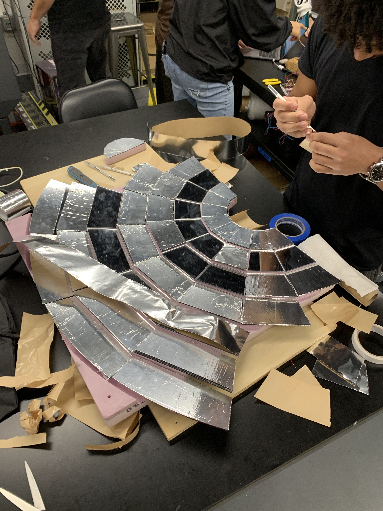
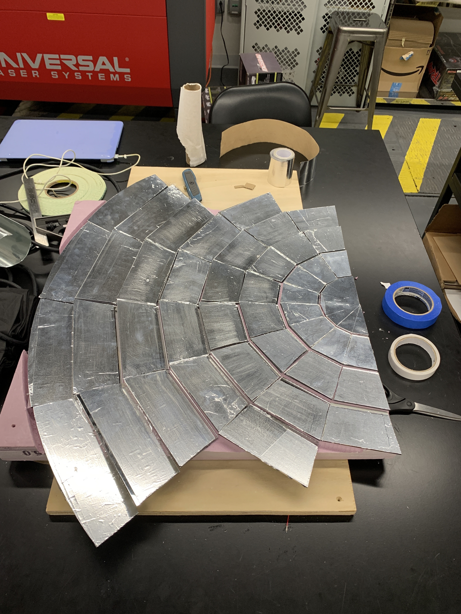
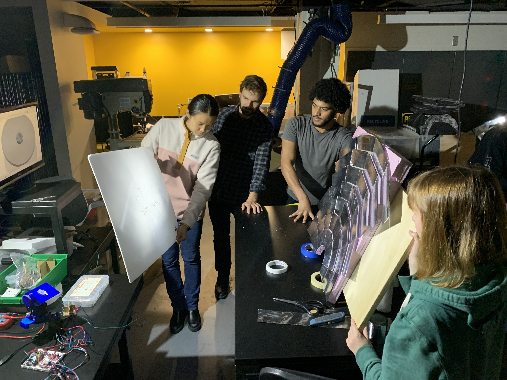
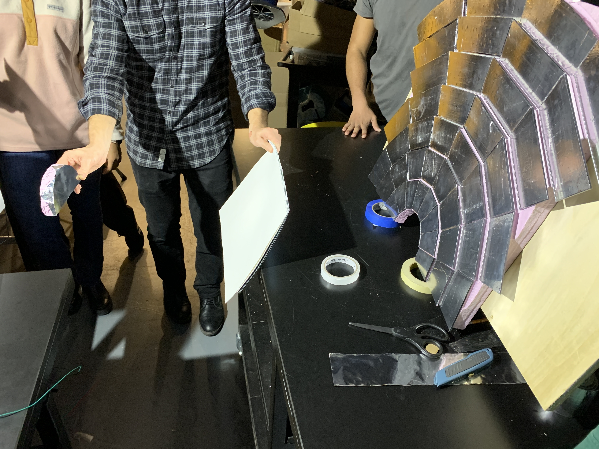
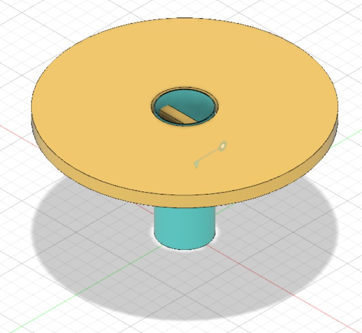
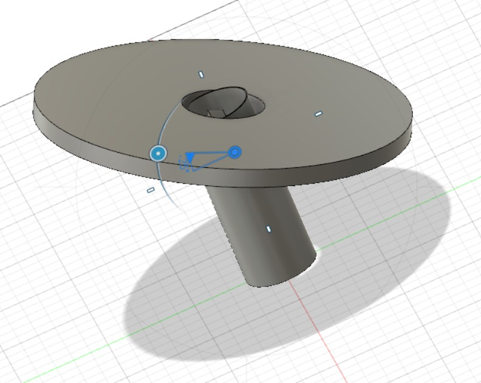

### Week 9: Initial Reflective Tape Test, Intro to Fusion360 Components
Last week, we discovered through experimentation that the reflective tape was one of the better performers when it came to reflecting heat from the sun. This week, we needed to test out the material, as well an initial bounce mirror, to see if this would be a suitable method to pursue. We started off by cutting out an inner semi-circle out of the Fresnel Reflector Array we had previously created. This was then wrapped in reflective tape, and would be used to test out whether or not or bounce-mirror idea would work.
Next, we continued to place reflective tape over the mirror panels that were already attached to the Fresnel Reflector Array. This required the precise measuring and cutting of tape pieces to fit over the panels properly, so as not to waste any energy when this would eventually get used outside.

The finished product was a reflector with tape over each of the mirror pieces.

After we finished taping up the array, it was time to conduct some preliminary tests on the array. We used a spotlight in order to mimic the sunlight, and get a good idea of where the focal point of the array was, and how well it was focusing light.

We also took this oppurtunity to see if our boucne mirror would work. The idea of the bounce mirror is that we will reflect sunlight off the main reflector up towards te bounce mirror, which will then focus the light down a reflective tube leading to the salt battery. We were able to see light focusing off of the bounce mirror, although it was very faint. This may have been due to the face that we were using a spotlight, which is not a focused beam of light.

After testing out this array, we wpent the next class learning about how to create components in Fusion360. This is a particulary useful skill when it comes to rapid prototyping, as it allows us to quickly create 3D representations of our ideas that make it easier to visualize them, and bring us closer to bringing them to life. Each of the different colors in the following image represents a different component.

Creating components allows us to do interesting things such as constrain different objects motion to have different degrees of freedom. For example, we are able to make the main dish rotate about a joint.

Seeing motions such as this is useful, because it helps us identify possible issues with our designs, such as different structures interfering with one another, and lets us avoid making these errors when its time to create a physical prototype.
And here is a [link to the home page](../index.html).